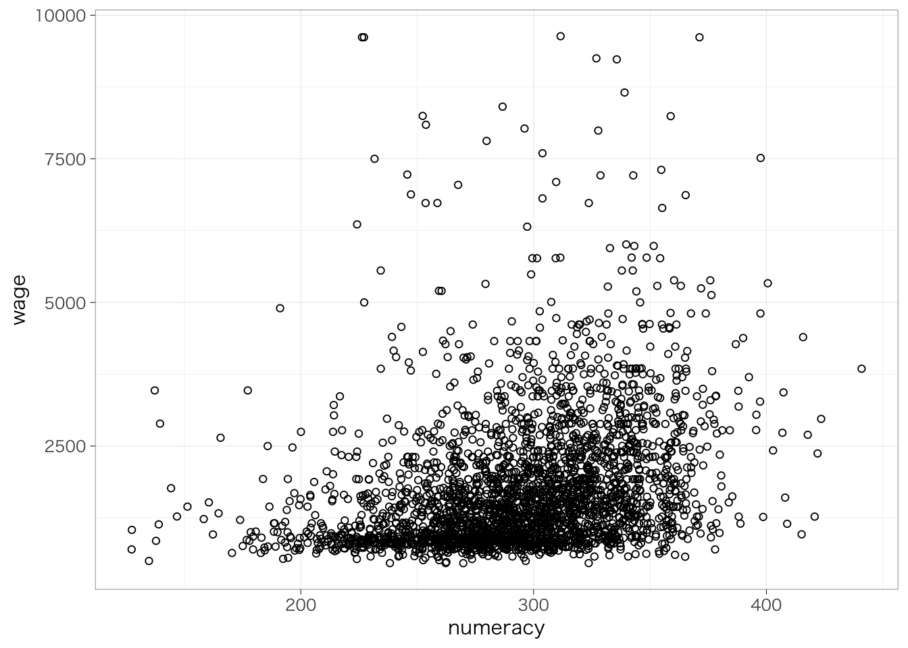
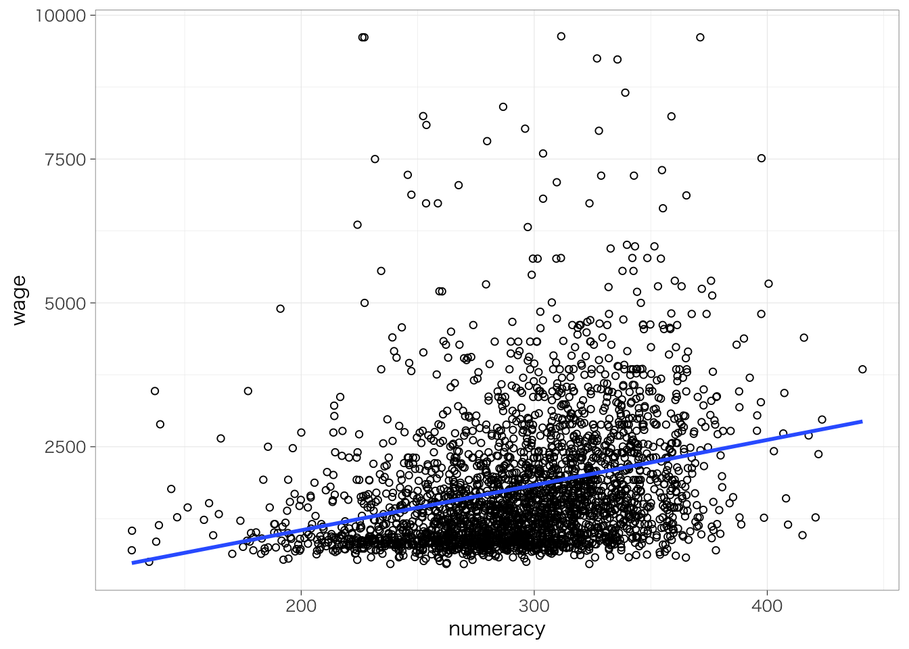
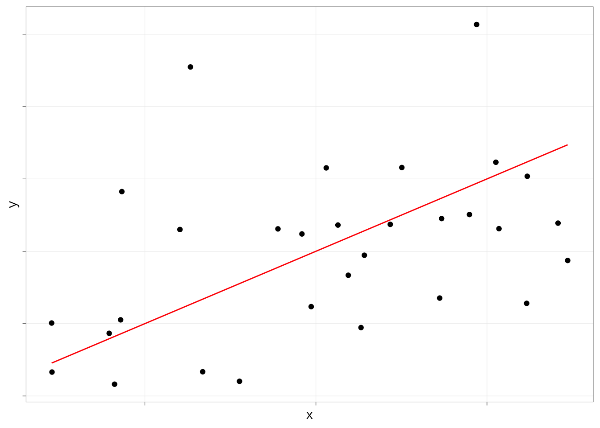
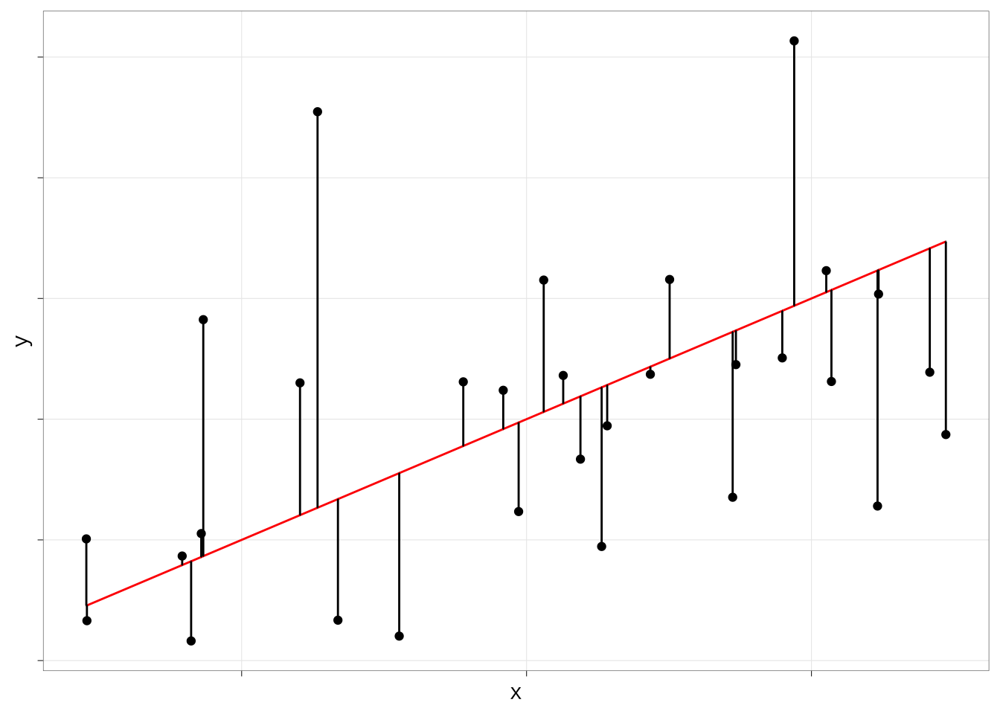
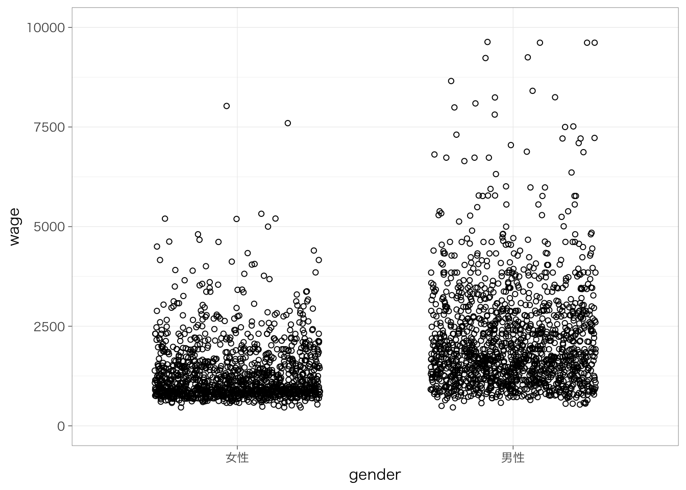
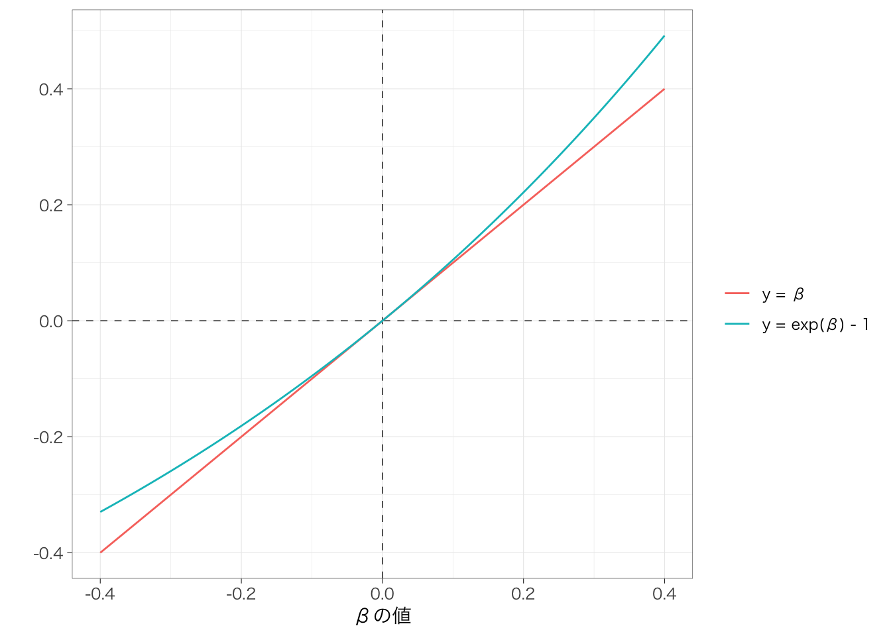

Chapter 7 回帰分析の基礎
本章では、回帰分析の基礎について説明する。
内容に入る前に、右上のプロジェクトのボックスの横が、前章で作成したプロジェクトの名前（たとえば、seminar_sociology_r）になっているかどうかを確認しておこう。なっていない場合は、右上のボックスをクリックして、「Open Project…」を選択し、前章で作成したRprojファイル（たとえば、seminar_sociology_r.Rprojといったような名前になっている）を選んで、プロジェクトを切り替えよう。
さらに、これまでの章で説明した以下のパッケージを読み込んだ上で、第4章で作成したデータを読み込んでpiaacというデータフレームに入れていることを前提とする。具体的には、以下のコードを実行しておく必要がある。
library(tidyverse)
library(gtsummary)
library(flextable)
piaac <- read_rds("data/piaac_sample_analytic.rds")第5章で確認したように、ggplotの設定を変更しておくことで見やすいグラフを作ることができる。ここでは以下のコードを実行している。
Macの場合：
theme_set(theme_bw(
base_family = "HiraginoSans-W3",
base_size = 11,
base_rect_size = 0.2,
base_line_size = 0.2
))Windowsの場合：
7.1 回帰分析とは何か
7.1.1 散布図を眺める
数的思考力スコア（numeracy）が高いほど賃金（時給換算）が高いという傾向があるかどうかを知りたいとする。このとき、年齢を横軸、賃金を縦軸とする散布図を書いてみる。

なんとなく、数的思考力スコアが高いほど賃金が高い傾向があるようにみえる。この関係を1つの直線で要約するとしたらどのようになるだろう？この直線を示したのが次の図になる。
piaac %>%
ggplot(aes(x = numeracy, y = wage)) +
geom_point(shape = 1) +
geom_smooth(method = "lm", se = FALSE)## `geom_smooth()` using formula = 'y ~ x'
7.1.2 回帰式の読み方
このように、2つの変数の関係を\(y = f(x)\)というような関数で表現する分析方法を指して、回帰分析 regression analysis/regression model という。とくに、今y軸に置かれている変数 （賃金）は、数的思考力スコアによって説明される変数であるという意味で、被説明変数 explained variableまたは従属変数 dependent variable、x軸に置かれている変数（数的思考力スコア）は、賃金を説明する変数であるという意味で、説明変数 explanatory variableまたは独立変数 independent variableという。
今回の式は、次のようなかたちになる16。
\[ y = \beta_0 + \beta_1x \]
今の例の場合は、\(y\)は賃金、\(x\)は年齢である。\(\beta_k\)のことを係数 coefficient といい、なかでもとくに\(\beta_0\)のことを切片 intercept、\(\beta_1\)のことを傾き slope という。傾きは、\(x\)が1単位増えると（\(\Delta x = 1\)）に\(y\)がどれだけ変化するかを表す。
ここで関心があるのは傾きの係数の値である。これが正であれば、\(x\)が高いほど\(y\)は高いという正の関係を表すし、負であれば、\(x\)が高いほど\(y\)は低いという負の関係を表す。絶対値が大きいほど、$x$1単位の変化に対して \(y\)がより大きく変わるということを表すので、たんに正か負かというだけでなく、その値も重要である。
今回の場合は係数はどうなるだろうか？線形回帰分析を推定するときのコマンドがlm()である17。lm(data = xx, formula = )という書き方になる。formula =の部分は省略しても大丈夫。
##
## Call:
## lm(formula = wage ~ numeracy, data = piaac)
##
## Coefficients:
## (Intercept) numeracy
## -521.073 7.849(Intercept)の部分が切片\(\beta_0\)、numeracyの部分がnumeracyの傾き\(\beta_1\)にそれぞれ対応する。したがって、賃金と年齢の関係は以下の式のように表されるということを意味する：
\[ y = -521.1 + 7.8x \]
7.1.3 回帰式の決め方：最小二乗法
もちろん、上記の回帰式は散布図をみて直観でえいやっと式の値を決めたのではなく、全体の傾向をもっともよく要約するような係数を推定している。その係数の推定方法を最小二乗法 ordinary least square, OLSという。
最小二乗法の意味は図にするとわかりやすい。例えば、次のような散布図と、そこに引いた直線を考えよう。

このとき、散布図の各点の座標を\((x_i, y_i)\)と表すことにしよう。すると、各点のy座標の位置\(y_i\)は、（1）回帰直線の式に\(x_i\)を当てはめた値と、（2）そこからのずれ（\(r_i\)とする）の和として表すことができる。すなわち：
\[ y_i = \beta_0 + \beta_1x_{i} + r_i \]
この\(r_i\)というのは、散布図の点からx軸に垂線を下ろしたときの、回帰直線との交点までの距離を表している。図で考えると次のようになる。

ずれ\(r_i\)のことを、残差（residuals）という。散布図に直線を引く方法はたくさんあるのだが、最小二乗法では、上記の残差の二乗和を最も小さくするような直線が散布図全体の傾向をもっともよく反映する直線だとみなして、切片と傾きのパラメータを推定する。式で書くとつぎのようになる。
\[ \sum_{i = 1}^N r_i^2 = \sum_{i = 1}^N(y_i - (\beta_0 + \beta_1x_{i}))^2 \]
この式を最小にするような\(\beta_0, \beta_1\)を求めるということになる。上式は\(\beta_0, \beta_1\)に関して下に凸な二次関数であるので、\(\beta_0\)について微分した値と\(\beta_1\)について微分した値が同時に0になるような\(\beta_0, \beta_1\)というのが、上式を最小にするようなパラメータだ、ということになる。
\[ \left\{ \begin{align} \frac{\partial}{\partial\beta_0}\sum_{i = 1}^N(y_i - (\beta_0 + \beta_1x_{i}))^2 &= 0\\ \frac{\partial}{\partial\beta_1}\sum_{i = 1}^N(y_i - (\beta_0 + \beta_1x_{i}))^2 &= 0\\ \end{align} \right. \]
これより先のくわしい証明は省略するが、いずれにしてもポイントは、回帰直線は「回帰直線と各点とのずれ（残差）の二乗和が最も小さくなるように引かれた線だ」ということである。
7.1.4 母集団における関係の推測
今回分析しているのはあくまで母集団から抽出された標本（サンプル）であり、本当に知りたいのは母集団においても確かに関係があるといえるかどうかである。今回のサンプルにおいて推定された係数は偶然生じたものではなく、母集団においても確かに正であるということはできるのだろうか。
まずはいったん、回帰分析の結果をオブジェクトに格納しよう。
結果は、summary()でよびだすことができる。呼び出した結果には、先ほどの疑問に答えるための情報が含まれている。
##
## Call:
## lm(formula = wage ~ numeracy, data = piaac)
##
## Residuals:
## Min 1Q Median 3Q Max
## -1774.0 -716.6 -304.5 373.9 8360.5
##
## Coefficients:
## Estimate Std. Error t value Pr(>|t|)
## (Intercept) -521.0726 151.8525 -3.431 0.000609 ***
## numeracy 7.8491 0.5098 15.396 < 2e-16 ***
## ---
## Signif. codes: 0 '***' 0.001 '**' 0.01 '*' 0.05 '.' 0.1 ' ' 1
##
## Residual standard error: 1143 on 2726 degrees of freedom
## Multiple R-squared: 0.08, Adjusted R-squared: 0.07966
## F-statistic: 237 on 1 and 2726 DF, p-value: < 2.2e-161列目のEstimateの列には、先ほどみたように係数の値が表示される。
2列目のStd. Errorの列が標準誤差 standard errorを表し、得られた係数のばらつき（標準偏差）を示している。標準誤差は、次に述べるp値の計算に使われている18。
4列めのPr(>|t|)の列がp値 p-valueを表している。p値は「もし母集団において係数が0であるという帰無仮説が正しいとしたときに、今回のような係数の値となる確率」を表している。この値が十分に低いのならば、帰無仮説を棄却して、たしかに母集団においても係数は0でなさそうだ（正あるいは負だ）、ということを自信をもって主張できるということになる。
numeracyの行のp値は0.001よりずっと低いことがわかる。つまり、母集団において年齢の係数が0であったとしたら、今回のような係数の値が得られる確率はとても低い（0.001 = 0.1%未満）、ということである。
この確率がどれくらい低ければ自信をもって関係があると言えるのか？ということについて、慣習的には、0.05という基準が使われている。Rでは、0.05よりも小さければ（正確には0.01 ≤ p < 0.05）、p値の横に*という印がつく。同じようにして、0.01よりも小さければ（0.001 ≤ p < 0.01）**、0.001よりも小さければ（p < 0.001）、***という印がつく。
このように、「母集団において係数が0であったとしたら、今回のような係数の値が得られる確率は十分に低い（0.05未満である）」ことを慣習的に「統計的に有意」と表記したり「有意差がある」などと表記する。基本的には、統計的に有意でないならば、係数が正であったり負であったりしても、その結果を（母集団においても関係が正だ／負だ、というふうに）強く論じることはできないと考えておけばよい。
7.2 独立変数がカテゴリ変数の場合
7.2.1 2値のカテゴリ
線形回帰分析では、連続変数だけではなく、カテゴリ変数も扱うことができる。その例としてまず、性別によって賃金がどの程度異なるのかを知りたいとする。このとき、（無理やり）散布図を書くと、次のようになる。分布がわかりやすいように点は水平方向に少し散らして表示している。

ここで得られた男性の平均値と女性の平均値をそれぞれ散布図に書き入れてみたのが次の図である。実線が男性の平均値、点線が女性の平均値を表している。

いま、男性であれば1、女性であれば0をとる変数\(x\)を考えよう。このように、カテゴリ変数のカテゴリを区別するために便宜的に0/1の値を振った変数のことを、ダミー変数 dummy variableという。このとき、性別による賃金の違いを表す回帰式は次のようになる：
\[ y = \beta_0 + \beta_1x \]
回帰式のかたちは先ほどと同じとなる。傾き\(\beta_1\)は、女性（0）とくらべて男性（1）がどの程度賃金が高いのかを示している。実際、この係数を推定してみよう。
##
## Call:
## lm(formula = wage ~ male_d, data = piaac)
##
## Residuals:
## Min 1Q Median 3Q Max
## -1733.1 -612.4 -329.3 368.6 7438.4
##
## Coefficients:
## Estimate Std. Error t value Pr(>|t|)
## (Intercept) 1339.12 31.03 43.16 <2e-16 ***
## male_d 856.38 42.65 20.08 <2e-16 ***
## ---
## Signif. codes: 0 '***' 0.001 '**' 0.01 '*' 0.05 '.' 0.1 ' ' 1
##
## Residual standard error: 1112 on 2726 degrees of freedom
## Multiple R-squared: 0.1289, Adjusted R-squared: 0.1285
## F-statistic: 403.2 on 1 and 2726 DF, p-value: < 2.2e-16male_dというのが、性別が男性のときに1、女性のときに0をとる変数である。この係数は傾き\(\beta_1\)に対応し、切片（Intercept）は切片\(\beta_0\)に対応する。つまり、推定された式は次のようになる：
\[ y = 1339 + 856x \]
つまり、女性（x = 0）とくらべて男性（x = 1）の賃金は856円高いということを意味している。
この値が、先ほど散布図に示した男性の平均値と女性の平均値の差に一致していることを確認しよう。すなわち、2値のカテゴリ変数を独立変数として用いる場合、傾きの値は、2つのカテゴリの平均値の差を表している。
7.2.2 3値以上のカテゴリ
カテゴリが3値以上の場合はどうだろう？これも、基本的には同じふうに考えることができる。たとえば、最終学歴が中学、高校、短大高専、大学大学院の4つのグループにおいて、賃金の平均がどの程度異なるのかを知りたいとする。

中学卒を基準として、高校卒（高校卒 - 中学卒）、短大高専卒（短大高専卒 - 中学卒）、大学大学院卒（大学大学院卒 - 中学卒）だとどれくらい賃金が高いのかを推定することになる。
piaac <- piaac %>%
mutate(educ_d2 = if_else(educ == "高校", 1, 0)) %>%
mutate(educ_d3 = if_else(educ == "短大高専", 1, 0)) %>%
mutate(educ_d4 = if_else(educ == "大学大学院", 1, 0)) 作成した変数を表にまとめると次のようになる。
| educ_d2 | educ_d3 | educ_d4 | |
|---|---|---|---|
| 中学 | 0 | 0 | 0 |
| 高校 | 1 | 0 | 0 |
| 短大高専 | 0 | 1 | 0 |
| 大学大学院 | 0 | 0 | 1 |
##
## Call:
## lm(formula = wage ~ educ_d2 + educ_d3 + educ_d4, data = piaac)
##
## Residuals:
## Min 1Q Median 3Q Max
## -1859.1 -690.8 -310.8 387.7 8184.0
##
## Coefficients:
## Estimate Std. Error t value Pr(>|t|)
## (Intercept) 1431.36 74.90 19.110 <2e-16 ***
## educ_d2 103.99 83.35 1.248 0.212
## educ_d3 112.34 86.44 1.300 0.194
## educ_d4 927.69 84.04 11.039 <2e-16 ***
## ---
## Signif. codes: 0 '***' 0.001 '**' 0.01 '*' 0.05 '.' 0.1 ' ' 1
##
## Residual standard error: 1126 on 2724 degrees of freedom
## Multiple R-squared: 0.1072, Adjusted R-squared: 0.1062
## F-statistic: 109 on 3 and 2724 DF, p-value: < 2.2e-16それぞれの係数は、基準カテゴリ（今回なら中学卒）と比べて、それぞれ高校、短大高専、大学大学院卒だとどれくらい賃金の平均値が高いのかを表している。標準誤差やp値のみかたについてはどれも同じである。
7.2.3 変数がfactorであれば自動でカテゴリとして投入される
先ほどまでは、0または1の値が入ったダミー変数を自分で作っていた。しかし、必ずしも自分で作る必要はない。独立変数の型がカテゴリの場合には、Rが自動で先ほどのようなダミー変数を勝手に作って投入してくれるからである。
##
## Call:
## lm(formula = wage ~ educ, data = piaac)
##
## Residuals:
## Min 1Q Median 3Q Max
## -1859.1 -690.8 -310.8 387.7 8184.0
##
## Coefficients:
## Estimate Std. Error t value Pr(>|t|)
## (Intercept) 1431.36 74.90 19.110 <2e-16 ***
## educ高校 103.99 83.35 1.248 0.212
## educ短大高専 112.34 86.44 1.300 0.194
## educ大学大学院 927.69 84.04 11.039 <2e-16 ***
## ---
## Signif. codes: 0 '***' 0.001 '**' 0.01 '*' 0.05 '.' 0.1 ' ' 1
##
## Residual standard error: 1126 on 2724 degrees of freedom
## Multiple R-squared: 0.1072, Adjusted R-squared: 0.1062
## F-statistic: 109 on 3 and 2724 DF, p-value: < 2.2e-16それぞれ、「educ高校」は中学卒と比べて高校卒の平均はいくら高いか、「educ短大高専」は中学卒と比べて短大高専卒の平均はいくら高いか、「educ大学大学院」は中学卒と比べて大学大学院卒の平均はいくら高いか、をそれぞれ表す。
ただし、基準カテゴリは一番最初のものが勝手に選ばれるので、たとえば大学大学院を基準にしてその他を比較したい、と思ったときには、自分でカテゴリの順序を変更しておく必要がある。
piaac <- piaac %>%
mutate(educ_reorder = fct_relevel(educ, "大学大学院", "短大高専", "高校", "中学")) # fct_relevel関数を使ってカテゴリの順序を大学、短大、高校、中学の順に並び替えた変数を作成
reg_res <- lm(data = piaac, wage ~ educ_reorder)
summary(reg_res)##
## Call:
## lm(formula = wage ~ educ_reorder, data = piaac)
##
## Residuals:
## Min 1Q Median 3Q Max
## -1859.1 -690.8 -310.8 387.7 8184.0
##
## Coefficients:
## Estimate Std. Error t value Pr(>|t|)
## (Intercept) 2359.06 38.11 61.90 <2e-16 ***
## educ_reorder短大高専 -815.35 57.57 -14.16 <2e-16 ***
## educ_reorder高校 -823.70 52.82 -15.60 <2e-16 ***
## educ_reorder中学 -927.69 84.04 -11.04 <2e-16 ***
## ---
## Signif. codes: 0 '***' 0.001 '**' 0.01 '*' 0.05 '.' 0.1 ' ' 1
##
## Residual standard error: 1126 on 2724 degrees of freedom
## Multiple R-squared: 0.1072, Adjusted R-squared: 0.1062
## F-statistic: 109 on 3 and 2724 DF, p-value: < 2.2e-16並び替えた結果、基準カテゴリが「大学大学院」となり、推定結果に表示されていないことがわかる。
7.3 従属変数が2値のカテゴリ変数（0/1）の場合
7.3.1 クロス表と比較しながら結果をみる
たとえば、性別によってこの1年間に職場での訓練（OJTとよぶ）を受ける率が異なっているかどうかを知りたいとする。これも今までと同じように回帰分析の枠組みで扱うことができる。
まず、OJTを受けたならば1、受けていないならば0を取る変数があるとする。これを性別ごとに比較したクロス表を作ってみよう。
## ojt
## gender 0 1
## 女性 865 419
## 男性 855 589クロス表の行割合を見てみよう。
## ojt
## gender 0 1
## 女性 0.674 0.326
## 男性 0.592 0.408行割合をみると、女性全体のうちOJTを受けている（Y = 1）割合は0.326（32.6%）であるのに対して、男性全体のうちOJTを受けている（Y = 1）割合は0.408（40.8%）であるということがわかる。
次に、このojtという変数の平均値を計算してみよう。するとどのようになるだろうか？まず、女性について平均値を計算するときの式は次のとおり：
\[ \frac{865 \times 0 + 419 \times 1}{865 + 419} = 0.326 \]
同じようにして、男性の平均値は次のように計算できる。
\[ \frac{855 \times 0 + 589 \times 1}{855 + 589} = 0.408 \]
これらの値は、上記クロス表の「1」のほうに示されている行割合、すなわち「OJTを受けた人の割合」に一致している。つまり、ある二値変数（0/1）の平均値をとると、その二値変数が1を取る割合（行割合）の値と一致するということである。
このことを図にして表してみよう。
piaac %>%
group_by(gender) %>%
summarize(mean_ojt = mean(ojt)) %>%
ggplot(aes(x = gender, y = mean_ojt)) +
geom_col() +
geom_text(aes(label = round(mean_ojt, digit = 3)), vjust = -1) +
ylim(0, 1) +
theme(legend.position = "none")棒グラフの高さが異なることから分かる通り、男性は女性とくらべてOJTを受けた割合が0.082（8.2%ポイント）19高い。
では、ojtを従属変数、性別を独立変数とする回帰式を推定してみよう。
##
## Call:
## lm(formula = ojt ~ gender, data = piaac)
##
## Residuals:
## Min 1Q Median 3Q Max
## -0.4079 -0.4079 -0.3263 0.5921 0.6737
##
## Coefficients:
## Estimate Std. Error t value Pr(>|t|)
## (Intercept) 0.32632 0.01343 24.30 < 2e-16 ***
## gender男性 0.08157 0.01846 4.42 1.03e-05 ***
## ---
## Signif. codes: 0 '***' 0.001 '**' 0.01 '*' 0.05 '.' 0.1 ' ' 1
##
## Residual standard error: 0.4811 on 2726 degrees of freedom
## Multiple R-squared: 0.007116, Adjusted R-squared: 0.006751
## F-statistic: 19.54 on 1 and 2726 DF, p-value: 1.026e-05「gender男性」と書かれている行が、女性と比べて男性が何ポイントOJTを受ける割合が高いのかを示している。この値は、ちょうど先ほどの棒グラフの男性と女性の割合（平均値）の差に一致している。つまり、回帰分析の係数は、男性と女性で、平均値（割合）にどの程度差があるのかを示しているのである。これは、これまでの連続変数を従属変数とするときの回帰分析と同じである。
係数の見方（プラスであると多い、マイナスであると少ない）も、標準誤差も、p値も、その解釈はすべて今までの回帰分析と同じとなる。
7.3.2 散布図と比較しながら結果をみる
もちろん、年齢などの連続変数を独立変数（X）として使うこともできる。たとえば、横軸に年齢、縦軸にOJTをとった散布図を考えてみよう。ここでは重なっているほど点が大きくなるように調整している。
piaac %>%
group_by(age, ojt) %>%
summarize(n = n()) %>%
ggplot(aes(x = age, y = ojt)) +
geom_point(aes(size = n), shape = 1) +
scale_size(range = c(1, 10)) +
geom_smooth(aes(weight = n), method = "lm", se = FALSE) +
theme(legend.position = "none")## `summarise()` has grouped output by 'age'. You can
## override using the `.groups` argument.
## `geom_smooth()` using formula = 'y ~ x'
縦軸のOJTは0または1しかとらないので、点はy = 1またはy = 0の位置のどちらかに描かれる。推定される回帰式は、この散布図全体の傾向を要約するような線として表される。実際に、回帰式を推定してみよう。
##
## Call:
## lm(formula = ojt ~ age, data = piaac)
##
## Residuals:
## Min 1Q Median 3Q Max
## -0.4416 -0.3842 -0.3230 0.6043 0.7076
##
## Coefficients:
## Estimate Std. Error t value Pr(>|t|)
## (Intercept) 0.5372265 0.0383580 14.006 < 2e-16 ***
## age -0.0038253 0.0008492 -4.504 6.94e-06 ***
## ---
## Signif. codes: 0 '***' 0.001 '**' 0.01 '*' 0.05 '.' 0.1 ' ' 1
##
## Residual standard error: 0.4811 on 2726 degrees of freedom
## Multiple R-squared: 0.007388, Adjusted R-squared: 0.007024
## F-statistic: 20.29 on 1 and 2726 DF, p-value: 6.936e-06年齢（age）の係数はマイナスであり、年齢が1歳高いと、OJTを受けている割合が0.004ポイント（0.4 %ポイント）低いということがわかる。
7.3.3 注意点
分析に先立ち、従属変数とする2値のカテゴリ変数のどちらを1とし、どちらを0とするかは自分であらかじめ決めておいて、数値型に変換しておく必要がある（カテゴリ変数のままでは分析できない）。
なお、従属変数が2値のカテゴリ変数の場合にはロジスティック回帰分析（ロジットモデル）やプロビットモデルといった方法がよく使われる。これについてはロジスティック回帰分析の章で解説する。ただし、今紹介した（ふつうの）回帰分析と比べるとやや解釈が難しい。また上記の（ふつうの）回帰分析を使っても、たいていの場合はそんなに結論が変わるわけではないので、学部レベルではこれで十分である。もちろん、関心のある人は積極的にチャレンジしてみるとよいだろう。
7.4 非線形の関連：対数変換
7.4.1 対数変換とは
用いる変数が正規分布から乖離しているときや、変数の単位に依存せず効果の大きさを測定したいとき、あるいは、比率（%）でみた変化に関心がある場合には、変数を対数変換することを検討するとよい。具体的には、次のような場面である：
- 高卒と比べて大卒であると、（実額ではなく）何%くらい賃金が高いのかを知りたい。
- 女性が男性と比べて何%賃金が低いのかを、通貨単位が異なる国（たとえば、日本と韓国）でそれぞれ調べて、どちらのほうがどれくらい男女の賃金格差が大きいのかを知りたい。
社会科学系では、底がeの対数（自然対数）を取ることで変数を対数変換することが多い。Rではlog()という関数で自然対数変換ができる。次のようにして、賃金を対数変換した変数を作ることができる。
2つの変数の分布を比較してみよう。
## `stat_bin()` using `bins = 30`. Pick better value
## with `binwidth`.
## `stat_bin()` using `bins = 30`. Pick better value
## with `binwidth`.
対数変換した後の変数は、対数変換する前の変数よりも正規分布に近づいていることがわかる。
7.4.2 自然対数と対数関数について
\[ e = \lim_{t\rightarrow0}(1 + t)^{\frac{1}{t}} \simeq 2.7182818\cdots \] で定義される数のことをネイピア数といい、\(e\)と書く（円周率\(\pi\)みたいな感じ）。慣習上、ネイピア数\(e\)を底とする指数\(e^x\)を\(\exp(x)\)と表記したりする。以下では、\(e^x\)のことを\(\exp(x)\)と書くことにする。
\(\log_a x\)のように表される関数を対数関数といい、次のように定義される：
\[ a^y = x \leftrightarrow y = \log_a x \]
とくに底が\(e\)の場合を自然対数という。社会科学系の文脈ではこのときには底を省略して、\(e^y = x \leftrightarrow y = \log(x)\)というふうに書かれることが多い。
7.4.3 対数を使った場合の回帰分析
先にみたように、数的思考力スコアと対数賃金の散布図を書くと、次のようになる。
piaac %>%
ggplot(aes(x = numeracy, y = logwage)) +
geom_point(shape = 1) +
geom_smooth(method = "lm", se = FALSE)## `geom_smooth()` using formula = 'y ~ x'対数変換した後の賃金を従属変数として、回帰分析を推定してみよう。
##
## Call:
## lm(formula = logwage ~ numeracy, data = piaac)
##
## Residuals:
## Min 1Q Median 3Q Max
## -1.31652 -0.39318 -0.05807 0.33222 2.14472
##
## Coefficients:
## Estimate Std. Error t value Pr(>|t|)
## (Intercept) 6.0351509 0.0688414 87.67 <2e-16 ***
## numeracy 0.0043809 0.0002311 18.95 <2e-16 ***
## ---
## Signif. codes: 0 '***' 0.001 '**' 0.01 '*' 0.05 '.' 0.1 ' ' 1
##
## Residual standard error: 0.518 on 2726 degrees of freedom
## Multiple R-squared: 0.1164, Adjusted R-squared: 0.1161
## F-statistic: 359.3 on 1 and 2726 DF, p-value: < 2.2e-16なお、対数変換した変数を新たに作成しなくても、次のように書くことで、回帰分析のコード中で対数変換を行う事ができる。以下でも同じ結果を得ることができる（結果は省略）。
numeracyの係数は、数的思考力スコアが1ポイント高いと、対数賃金が0.004ポイント高いということを意味する。
7.4.4 従属変数の対数を取ったときの結果の解釈
対数賃金がxxxポイントだけ高いというのは、実質的にはどのような意味なのだろうか？
まず、一般的な以下のような単回帰分析について考える。
\[ y = \beta_0 + \beta_1x \]
このとき、\(x\)が1単位増えたとき（\(\Delta x = 1\)）の\(y\)の変化分を\(\Delta y\)とすると、先の式は次のようになる。
\[ \begin{align} y + \Delta y &= \beta_0 + \beta_1 (x + 1) \\ y + \Delta y &= (\beta_0 + \beta_1 x) + \beta_1 \\ \Delta y &= \beta_1 \\ \end{align} \]
このとき、\(\Delta y = \beta_1\)となる。すなわち、\(x\)が1単位増えたときには、\(y\)が\(\beta_1\)だけ変化する、ということを表している。
では、次のような式のときはどうだろうか？
\[ \log(y) = \beta_0 + \beta_1x \]
同じように、\(x\)が1単位増えたとき（\(\Delta x = 1\)）の\(y\)の変化分を\(\Delta y\)と表すことにする。すると、
\[ \begin{aligned} \log(y + \Delta y) &= \beta_0 + \beta_1(x + 1) \\ y + \Delta y &= \exp(\beta_0 + \beta_1(x + 1)) \\ y + \Delta y &= \exp(\beta_1)\exp(\beta_0 + \beta_1x) \\ y + \Delta y &= \exp(\beta_1)y \end{aligned} \]
となり、\(x\)が1単位増えたときに\(y\)は\(\exp(\beta_1)\)倍になる、ということがわかる。いくつか実際の値を計算してみると、次のようになる。なお、\(\simeq\)は「ほぼ等しい」ということを意味する記号である。
\[ \begin{align} \beta_1 &= 0.1 \leftrightarrow \exp(\beta_1) \simeq 1.105 \\ \beta_1 &= 0 \leftrightarrow \exp(\beta_1) \simeq 1 \\ \beta_1 &= -0.1 \leftrightarrow \exp(\beta_1) \simeq 0.905 \\ \end{align} \]
\(\exp(\beta_1)\)が1単位増えたときに\(y\)が\(\exp(\beta_1)\)倍になる、ということを表す。すなわち、\(\beta_1\)の値が小さい場合には、対数変換した従属変数の係数は、独立変数が1単位増えたときに従属変数が何倍になるかを表す。
なお、\(\beta_1\)の値がある程度小さい場合には、\(\beta_1\)と\(\exp(\beta_1) - 1\)（または、\(\beta_1 + 1\)と\(\exp(\beta_1)\)）はかなり近い値になる。ただし、\(\beta_1\)が大きくなるほど両者のずれは大きくなる。これを図示したのが以下の図である。

横軸は\(\beta\)の値を、縦軸にはそれぞれ\(y = \beta\)または\(y = \exp(\beta) - 1\)のときの\(y\)の値をそれぞれ示している。この図からもわかるように、\(\beta\)の絶対値が小さい（たとえば、-0.1〜+0.1）場合には、この2つの線はほとんど重なっている。一方で、\(\beta\)の値が大きくなっていくと、両者の\(y\)の値は徐々に隔たっていくことがわかる。たとえば\(\beta = 0.4\)のときには、\(y = \exp(0.4) - 1 = 0.49\)である。また、\(\beta = -0.4\)のときには、\(y = \exp(-0.4) - 1 = -0.33\)である。したがって、対数変換した変数を従属変数とした回帰分析を用いる場合には、値の指数を計算するのが望ましい。
実例を確認しよう。例えば次のように対数賃金を従属変数、性別を独立変数とする回帰分析を推定する。
##
## Call:
## lm(formula = logwage ~ gender, data = piaac)
##
## Residuals:
## Min 1Q Median 3Q Max
## -1.40835 -0.35529 -0.07757 0.32873 1.90992
##
## Coefficients:
## Estimate Std. Error t value Pr(>|t|)
## (Intercept) 7.08073 0.01395 507.5 <2e-16 ***
## gender男性 0.46412 0.01918 24.2 <2e-16 ***
## ---
## Signif. codes: 0 '***' 0.001 '**' 0.01 '*' 0.05 '.' 0.1 ' ' 1
##
## Residual standard error: 0.5 on 2726 degrees of freedom
## Multiple R-squared: 0.1769, Adjusted R-squared: 0.1766
## F-statistic: 585.7 on 1 and 2726 DF, p-value: < 2.2e-16gender男性の係数の値は0.464である。この係数が実際にどれくらいの違いを表しているかを計算するときには、次のようにする：
## [1] 1.590614すなわち、男性であると、女性と比べて賃金が1.59倍高い = 男性は女性と比べて賃金が59%高い、ということを表す。
7.4.5 従属変数または独立変数を対数変換したときの解釈
従属変数だけではなく、独立変数についても対数を取ることができる。\(\beta_1\)がある程度小さい場合、それぞれ解釈は次のようになる：
| モデル | 解釈 |
|---|---|
| \(y = \beta_0 + \beta_1x\) | \(x\)が1単位増えると、\(y\)が\(\beta_1\)増える |
| \(\log(y) = \beta_0 + \beta_1x\) | \(x\)が1単位増えると、\(y\)が\(100 \times \beta_1\)%増える |
| \(y = \beta_0 + \beta_1\log(x)\) | \(x\)が1%増えると、\(y\)が\(\beta_1 / 100\)増える |
| \(\log(y) = \beta_0 + \beta_1\log(x)\) | \(x\)が1%増えると、\(y\)が\(\beta_1\)%増える |
7.5 非線形の関連：二次曲線型
7.5.1 二次曲線とは
年齢と賃金がどのような関係にあるかを改めて考え直してみよう。年齢と賃金の関係は、たんに年齢が上がると賃金が上がるという線形の関連ではなく、年齢が上がるほど賃金の上昇が緩やかになっていって、ある程度年齢が上がると関係が反転する（負の関係になる）ということが考えられる。このような場合には、次のように二次曲線（二次関数）を使うことで、こうした関係をうまく表現できる。
\[ y = \beta_0 + \beta_1x + \beta_2x^2 \]
このような場合、\(x\)が1単位増えたときの\(y\)の増加量は、もともとの\(x\)の値によって異なる。\(x\)が1単位増えたときの\(y\)の変化分を\(\Delta y\)と表すとすると、
\[ \begin{align} y + \Delta y &= \beta_0 + \beta_1(x + 1) + \beta_2 (x + 1)^2 \\ &= (\beta_0 + \beta_1x + \beta_2x^2) + \beta_1 + (2x + 1)\beta_2 \\ \Delta y &= \beta_1 + (2x + 1)\beta_2 \end{align} \]
となる。すなわち、\(x\)が1単位増えたときの\(y\)の増加量は、もともとの\(x\)の値によって異なるということになる。回帰式の形状や結果の読み方は次のようになる：
| \(\beta_2\)の係数 | 解釈 | 形状 |
|---|---|---|
| \(\beta_2 < 0\) | xが大きいほど、x1単位の増加に対するyの増加量は小さい | \(-\beta_1/2\beta_2\)を底とする、上に凸な2次関数 |
| \(\beta_2 > 0\) | xが大きいほど、x1単位の増加に対するyの増加量は大きい | \(-\beta_1/2\beta_2\)を底とする、下に凸な2次関数 |
7.5.2 変数の作成と結果の解釈
年齢を2乗した変数は次のように作成できる。
回帰分析を行ってみる：
##
## Call:
## lm(formula = logwage ~ age + age_sq, data = piaac)
##
## Residuals:
## Min 1Q Median 3Q Max
## -1.28557 -0.44715 -0.03263 0.36524 1.95383
##
## Coefficients:
## Estimate Std. Error t value Pr(>|t|)
## (Intercept) 5.636e+00 1.762e-01 31.98 <2e-16 ***
## age 7.609e-02 8.226e-03 9.25 <2e-16 ***
## age_sq -8.064e-04 9.185e-05 -8.78 <2e-16 ***
## ---
## Signif. codes: 0 '***' 0.001 '**' 0.01 '*' 0.05 '.' 0.1 ' ' 1
##
## Residual standard error: 0.5415 on 2725 degrees of freedom
## Multiple R-squared: 0.03465, Adjusted R-squared: 0.03394
## F-statistic: 48.91 on 2 and 2725 DF, p-value: < 2.2e-16二次曲線の場合、個々の係数だけではあまり解釈ができない。そこで、散布図と回帰直線（曲線）をみてみよう：
piaac %>%
ggplot(aes(x = age, y = logwage)) +
geom_point(shape = 1) +
geom_smooth(method = "lm", formula = y ~ poly(x, 2), se = FALSE) # 2次曲線を描く場合にはformula = y ~ poly(x, 2)というオプションを追加。
このように、若いときには年齢による賃金の上昇は大きいけれども、その上昇幅は年齢が高くなるほど小さくなり、高い年齢ではむしろ負に転ずることがわかる。年齢についてはこのように二次曲線をつかうことはしばしば有効である。
なお2乗した変数を別に作らなくても、回帰分析のコード中で2乗した変数を作成することができる。（結果は省略）次のようにI()という表記を用いて、()内で行いたい計算方法を指定する。
7.5.3 モデル選択とF検定
連続変数を独立変数として用いる場合には、その関連が線形ではなく、このように非線形である可能性についても考えることが望ましい。二次曲線を使うかどうかは、次の2点から決める。
- 理論的に、あるいはこれまで知られている経験的な傾向に照らして妥当かどうか。日本の場合、初めて働き始めた時期の賃金は低く、高い職位へと昇進していったり、キャリアアップのための転職も起こりやすい。そのため、賃金は大きく上昇していく。他方、高い年齢になってくると昇進は落ち着くため、賃金の上昇率は小さくなっていくだろう。さらに60歳のときには定年があり、定年を期に嘱託社員などに転換することによって、賃金が減少することもあるだろう。したがって、年齢と賃金の関係は山なりの二次曲線型になると考えられる。実際、賃金構造基本統計調査などの公的統計でも、年齢と賃金の関係がこうした山なりの二次曲線型になっていることが確認できる。
- 実際のデータへの当てはまりが良いかどうか。たとえばF検定を用いて線形のモデルと二次曲線のモデルのどちらがよりデータに当てはまるかを比較する。もし二次曲線のモデルのほうが当てはまりが良いと判断できるならば、二次曲線を使うとよい。
上記の2つめ、すなわち実際のデータへの当てはまりが良いかどうかを確認するためには、線形モデルと二次曲線モデルを比較するのが有用である。その方法の一つが、F検定である。F検定では、入れ子になっている（どちらかのモデルからある変数を抜くと、もう一方のモデルと一致するということを意味する）2つのモデルを比較して、より多くの独立変数を含めたモデルがより少ない独立変数からなるモデルよりもよりよくデータに当てはまっているといえるかどうかをテストすることができる。anova()という関数を用いる。具体的には、次のようにする。
model1 <- lm(data = piaac, logwage ~ age) # 線形モデルを推定
model2 <- lm(data = piaac, logwage ~ age + I(age^2)) # 二次曲線モデルを推定
anova(model1, model2)## Analysis of Variance Table
##
## Model 1: logwage ~ age
## Model 2: logwage ~ age + I(age^2)
## Res.Df RSS Df Sum of Sq F Pr(>F)
## 1 2726 821.73
## 2 2725 799.12 1 22.608 77.094 < 2.2e-16 ***
## ---
## Signif. codes: 0 '***' 0.001 '**' 0.01 '*' 0.05 '.' 0.1 ' ' 1出力結果の2行目がF検定の結果である。このように2つの回帰式を比較するときのF検定では、一方のモデルを当てはめた場合の残差平方和（Residual Sum of Squares, RSS）と、もう一方のモデルを当てはめた場合の残差平方和が異なるといえるか、ということを検定する。もし異なると言えるならば、変数を追加したことでより残差の小さい = データへの当てはまりのよいモデルを得られたということを意味する。具体的にはPr(>F)の値を見ればよく、この値が十分に小さい（たとえば0.05よりも小さい）ならば、独立変数の数が多い方のモデル（今回の場合は二次曲線モデル）のほうが統計的に有意に残差平方和が小さく、したがってよりデータへの当てはまりがよいといえる。
7.6 回帰分析の結果をきれいに表示する
先ほどの回帰分析の結果をもう少しきれいに表示したいと思うかもしれない。このようなときに活躍するのがmodelsummaryパッケージである。
なお、modelsummary パッケージをインストールする（または読み込む）際、pandoc というパッケージを併せてインストールするよう要求されるかもしれない。この場合は、いわれたとおりにinstall.packages("pandoc")を実行しよう。
では、実際に使ってみよう。modelsummary(list(model))（modelという部分には、すでに保存しておいた回帰分析の結果を入れる）というのが最低限のコマンド。
| (1) | |
|---|---|
| (Intercept) | 7.136 |
| (0.044) | |
| age | 0.004 |
| (0.001) | |
| Num.Obs. | 2728 |
| R2 | 0.007 |
| R2 Adj. | 0.007 |
| AIC | 44447.2 |
| BIC | 44464.9 |
| Log.Lik. | -2234.183 |
| F | 20.156 |
| RMSE | 0.55 |
よく論文でみる感じのきれいな見た目になる。とはいえ、まだたとえば変数名が何を指しているかなどは改善の余地がある。オプションを色々指定することで、よりわかりやすい表が作れる。
modelsummary(list(reg_res),
stars = TRUE, # 有意水準を示す印をつける
coef_map = c("(Intercept)" = "切片",
"age" = "年齢"), # 各変数に名前をつける
gof_map = c("nobs", "r.squared") # サンプルサイズと決定係数のみ記載する
)| (1) | |
|---|---|
| + p < 0.1, * p < 0.05, ** p < 0.01, *** p < 0.001 | |
| 切片 | 7.136*** |
| (0.044) | |
| 年齢 | 0.004*** |
| (0.001) | |
| Num.Obs. | 2728 |
| R2 | 0.007 |
このように各変数がそれぞれ何の変数なのか名前をつけてやると、読む人にとって見やすい表になる。
7.7 結果をファイルに書き出す
7.7.1 Wordファイルに書き出す
第5章、第6章と同様、回帰分析についても結果をWordに書き出すことができる。flextableパッケージを読み込んでおいた状態で（この章では冒頭ですでに読み込んでおいた）、上記のmodelsummary()のコードにoutput = "flextable"というオプションをつけて、save_as_docx()を実行することで、Wordファイルに結果を書き出すことができる。
library(flextable) # もし読み込んでいない場合は実行
modelsummary(list(reg_res),
stars = TRUE, # 有意水準を示す印をつける
coef_map = c("(Intercept)" = "切片",
"age" = "年齢"), # 各変数に名前をつける
gof_map = c("nobs", "r.squared"),
output = "flextable") %>%
save_as_docx(path = "results/regression.docx") # 出力先のファイル名をつけるas_flex_table() %>% save_as_docs(path = "xxx.docx")を使っていた第5章、第6章とは少し違う点に注意。多少の手直しが必要かもしれないが、きれいな回帰分析の表をWordファイルに書き出すことができる。
7.7.2 PowerPointファイルに書き出す
結果をPowerPointに書き出すこともできる。この場合は、末尾の拡張子を「.pptx」に変えるとよい。
library(flextable) # もし読み込んでいない場合は実行
modelsummary(list(reg_res),
stars = TRUE, # 有意水準を示す印をつける
coef_map = c("(Intercept)" = "切片",
"age" = "年齢"), # 各変数に名前をつける
gof_map = c("nobs", "r.squared"), # サンプルサイズと決定係数のみ記載する
output = "flextable") %>% # 出力先のファイル名をつける（pptx）
save_as_pptx(path = "results/regression.pptx")7.8 練習問題
- 賃金（
wage）を従属変数、両親の学歴（parenteduc）を独立変数とする回帰分析を推定し、結果を表示してください。 - 主観的健康度（
health）を従属変数、年齢と年齢2乗を独立変数とする回帰分析を推定し、結果を表示してください。 - 職業（
occupation）が「管理職」であれば1、それ以外であれば0となるダミー変数（managerという名前をつけてください）を作成してください。また、性別（gender）が「女性」であれば1、「男性」であれば0となるダミー変数（female_dという名前をつけてください）を作成してください。 - 管理職か否か（
manager）を従属変数、女性ダミー（female_d）を独立変数とする回帰分析を推定し、結果を表示してください。
今回のような場合を線形回帰分析 Linear regressionということもある。↩︎
lmというのはlinear modelの頭文字を取ったものである。↩︎
正確には、係数 - 0を標準誤差で割ることでt値を求める。自由度df（N - 推定した係数の個数）のt分布のもとで、t値の絶対値が得られたt値よりも極端な値になる確率を計算したものがここで表示されているp値である。↩︎
%どうしの差を指すときには「%ポイント」という表現を使う。たとえば、2020年1月の日本における完全失業率は2.4%であったが、同年12月には3.0%に上昇した。このときには「0.6%上昇した」というのではなく「0.6%ポイント上昇した」という。なぜなら、「0.6%上昇した」というと、2.4%を基準にしてその0.6%分（つまり、2.4×0.006 = 0.0144 %）だけ上昇したということなのか、それとも、2.4%に 0.6%を足した値になったということなのかがわかりにくいからである。↩︎